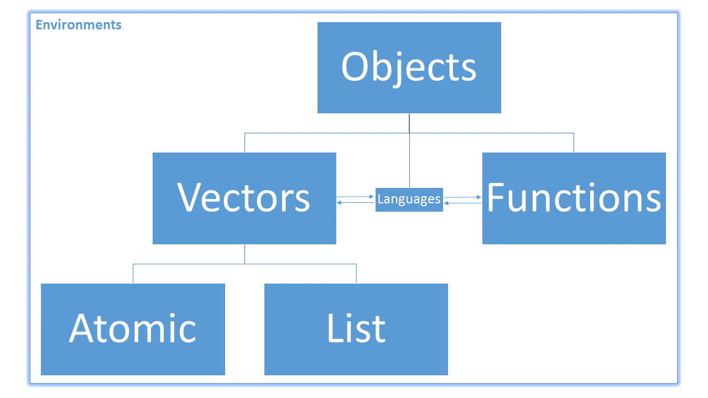

Lesson 11: Functions and Control Flow in R
Review
What did we learn last class?
- String Matching
- Modifying Strings
- Substring Extraction
- Trim and Pad Strings
- Manipulate Strings within Tibbles
Outline
In this lesson, we will cover the following:
- Control Flow in R
- Creating Functions
- Best Practices
- Function Scoping
Reading, Videos, and Assignments
- Watch: <>
- Read:
- Do:
Getting Started
Preliminary Comments
Functions are what gives R its power and flexibility, but it is also what gives R its incredibly steep learning curve. All of the material in this lesson is considerably more challenging than what you’ve done in this class so far. However, if you can understand functions and how to apply them to the vectors you have already created, you can do almost anything you will ever need to do.
This lesson on functions (and the next lesson on purrr) are high-difficulty, high-reward.
Expressions
All of these sections make use of expressions. An expression in R is a line of code or multiple lines of code that accomplish one or more tasks when executed. In this sense, we have been using expressions since day 1. For this lesson, when we say expression, think “some code that will do something without errors”. Some expressions are simple, like "Hello, world!", while others are far more complicated (like the chains of dplyr functions).
Control Flow in R
In modern computer languages, we have access to primitive statements that “control” the “flow” of how we solve problems. They are the building blocks upon which the rest of the language is constructed. These building blocks themselves aren’t always as easy to use or easy to understand, but they are worth a look.
IF “this”; ELSE “that”
The IF/ELSE router controls a set of expressions and evaluates them based on a single logical condition (that is, a logical atomic vector with length 1). We saw a variant of this when we used the case_when() function in the dplyr:: lesson. Here is an example.
# Draw a single random number from the normal distribution
xRand <- rnorm(1)
# If the value is negative, say so
if (xRand < 0) { "This value is negative." }Let’s unpack this example. The if function is a special function that does not use the normal functionName(arg1 = val1) syntax. The syntax is if (CONDITION is TRUE) {DO TASK}. If the single atomic logical value in the parentheses is TRUE, then execute the expression in the curly braces. That is, if xRand < 0 evaluates to TRUE, then print "This value is negative."
What about if the value is positive? We could add another if () {} control, or we could use the else function. Like the if function, it also has a special syntax that can only be used with an if function. That syntax is if (CONDITION is TRUE) {DO TASK} else {DO OTHER TASK}. For example:
# Draw a new random number from the normal distribution
xRand <- rnorm(1)
if (xRand < 0) { "This value is negative." } else { "You're a winner!" }[1] "You're a winner!"Because these expressions can often span multiple lines, we often write IF/ ELSE controls like this:
# Draw another new random number from the normal distribution
xRand <- rnorm(1)
if (xRand < 0) {
"This value is negative."
} else {
"You're a winner!"
}[1] "This value is negative."Use an IF/ELSE chain to replicate the functionality of the absolute value function (abs()).
FOR
The FOR controller allows us to repeat a task for some pre-defined number of times. Unlike the IF/ELSE control, the FOR control only makes sense to use with vectors with length greater than 1.
for (j in 1:10) { print(j + 1) }[1] 2
[1] 3
[1] 4
[1] 5
[1] 6
[1] 7
[1] 8
[1] 9
[1] 10
[1] 11Let’s unpack the FOR loop. The FOR loop has the following syntax: for (INDEX in VECTOR) {EVALUATE f(INDEX)}, where f(INDEX) is some expression or function using the value of the index (though in some FOR loops the value of the index isn’t used at all).
Now, it is important to understand the following: FOR loops are rarely useful for us to write directly in R, because R is a vectorised language. We could have done the exact same computation much simpler if we make use of R’s natural processing of vectors:
(1:10) + 1 [1] 2 3 4 5 6 7 8 9 10 11Because R is a vectorized language, the FOR loops are written for you already and hidden deep in the computer (if you want to know more, see this excellent post on vectorization in R). However, FOR loops in R are critical when we need to create a function whose values at one position depend on the values before it; these constraints occur when simulating or analyzing observations over time, where the value of the vector at position i depends on the value at i - 1. As a more complicated example, we will create the Fibonacci Sequence:
# Create empty vector of length 50
fiboRes_int <- rep(NA_integer_, 50)
# Initialize
fiboRes_int[1] <- 1L
fiboRes_int[2] <- 1L
for (i in 3:50) {
fiboRes_int[i] <- fiboRes_int[i - 1] + fiboRes_int[i - 2]
}Warning in fiboRes_int[i - 1] + fiboRes_int[i - 2]: NAs produced by integer
overflowfiboRes_int [1] 1 1 2 3 5 8
[7] 13 21 34 55 89 144
[13] 233 377 610 987 1597 2584
[19] 4181 6765 10946 17711 28657 46368
[25] 75025 121393 196418 317811 514229 832040
[31] 1346269 2178309 3524578 5702887 9227465 14930352
[37] 24157817 39088169 63245986 102334155 165580141 267914296
[43] 433494437 701408733 1134903170 1836311903 NA NA
[49] NA NAThe warning we see, and the missing values in the results vector, should serve as a warning that FOR loops are indeed powerful, but must be used with great care.
Remove the print() call within the expression for the first FOR loop. What happens? Can you infer anything special about what happens inside the { }?
WHILE and BREAK
The WHILE controller allows us to repeat a task for an undefined number of times. Unlike the FOR control, the WHILE control can continue to run indefinitely. USE WITH EXTREME CAUTION.
WHILE loops are the foundation controller for most iterative mathematical algorithms. Because they can continue to compute indefinitely, they are also used to model scenarios where unknown or random forces act on objects. For example, pretend that we have a social game where an individual will continue to play until they reach a condition; e.g. speed dating, where a person (say “Todd, a software developer”) will continue to move from table to table until they find “the one”, upon which they exit the game.
Because WHILE loops can execute until the heat death of the universe, we recommend that you add a print statement that counts how many loops have been made. For example, let’s find out how many dates Todd goes on during the speed dating event:
# Initialize
hasDate <- 0
attempts <- 1
while (hasDate != 1) {
# Make a condition that only happens with 2.5% chance
hasDate <- rnorm(1) < -1.96
attempts <- attempts + 1
print(attempts)
}[1] 2
[1] 3
[1] 4
[1] 5
[1] 6
[1] 7
[1] 8
[1] 9
[1] 10
[1] 11
[1] 12
[1] 13
[1] 14
[1] 15
[1] 16
[1] 17
[1] 18
[1] 19
[1] 20
[1] 21
[1] 22
[1] 23
[1] 24
[1] 25
[1] 26
[1] 27
[1] 28
[1] 29
[1] 30
[1] 31
[1] 32
[1] 33
[1] 34
[1] 35
[1] 36
[1] 37
[1] 38
[1] 39
[1] 40
[1] 41
[1] 42
[1] 43
[1] 44
[1] 45
[1] 46
[1] 47
[1] 48
[1] 49
[1] 50
[1] 51
[1] 52
[1] 53
[1] 54
[1] 55
[1] 56
[1] 57
[1] 58
[1] 59
[1] 60The WHILE loop repeated 60 times before the success condition was reached! In these cases, it would be nice to have a stopping condition. In our example, we can assume that there are only 30 potential date candidates for Todd to meet at the event, so we break the loop if we reach 30 attempts. This “exit” strategy uses the BREAK controller:
# Initialize
hasDate <- 0
attempts <- 1
while (hasDate != 1) {
# Make a condition that only happens with 2.5% chance
hasDate <- rnorm(1) < -1.96
attempts <- attempts + 1
if(attempts >= 30L){
print("No date found.")
break
}
print(attempts)
}[1] 2
[1] 3
[1] 4
[1] 5
[1] 6
[1] 7
[1] 8
[1] 9
[1] 10
[1] 11
[1] 12
[1] 13
[1] 14
[1] 15
[1] 16
[1] 17
[1] 18
[1] 19
[1] 20
[1] 21
[1] 22
[1] 23
[1] 24
[1] 25
[1] 26
[1] 27
[1] 28
[1] 29
[1] "No date found."- If you have accidentally written a WHILE loop that runs for eternity, how do you stop it without closing RStudio entirely?
- Read the lessons under the “Decision and Loop” section of DataMentor’s R Programming page: https://www.datamentor.io/r-programming/#tutorial
Did you notice that if, else, for, while, and break all changed colour when you typed them? That is R telling you that these objects—remember that everything in R is an object—are reserved. That means that we cannot assign values to them or use them for any reason other than their designed purpose.
Creating Functions
One of the other reserved objects in R is function. This is the reserved function object used to create all other non-reserved functions. Here is an example; we will create a function that says “hi” to us:
greetMe <- function(){ "Hello, Dr. Gabriel!" }This function is just like any other function you have used before. Call it by typing its name followed by ().
greetMe()[1] "Hello, Dr. Gabriel!"Function Arguments
Most functions we have used take in arguments; that is, they change their behaviour based on the values supplied to them. For example, we can create a function that finds the geometric mean of two numbers. In mathematics, this is
\[ f(x_1, x_2) := \sqrt{x_1 \cdot x_2}, \]
where the dot between the numbers is for multiplication. In code, this would be:
geomMean <- function(a, b){ sqrt( a * b ) }Once again, any time we create a function, we test it using values we know. For example, we know that the product of 5 and 20 is 100, and that the square root of 100 is 10. Thus, the geometric mean of 5 and 20 calculated by our function should be 10:
geomMean(5, 20)[1] 10Overview of Function Syntax
Just like the control flow functions, the function operator has very special syntax: funName <- function(ARGUMENTS){ EXPRESSION using ARGUMENTS }. Moreover, because the expression inside the { } can be quite long and complex, the function returns whatever happens on the last line. Up to this point, both of our functions have only had one line, so that was the last line by default.
For example, we can write a version of the abs() function by nesting an an IF statement within a function. If we ever need to have our function stop execution and return a value early, we can use the RETURN controller:
absoluteValue <- function(num){
out <- num
if(num > 0){
return(out)
}
-1 * out
}When we test this function, we need to try it with both a positive and a negative number for num:
absoluteValue(5)[1] 5absoluteValue(-5)[1] 5- Create a function that finds out if Todd gets a date. The argument of the function is the number of pairs at the event. Replace the
30Lin the WHILE loop above with this argument. - Go back and read the section on functions in the Hands on Programming with R chapter titled “The Very Basics”.
Function Best Practices
Because R is a functional language, the functions you write should be the most important pieces of your code. Functions in R, through their inherent vectorized efficiency, turn this
lsum <- 0
for (i in 1:length(x)) {
lsum <- lsum + log(x[i])
}into this
lsum <- sum(log(x))(This and other mortal R sins are covered in The R Inferno.) R is a functional programming language, so you must learn to use functions in your code. Furthermore, while this isn’t required, you should probably think about collecting the functions you write into a package. Here are some guidelines on writing functions:
- Functions should do one major thing, only that thing, and that thing well. A function that does a million things is easy to break and horribly difficult to test. Keep your functions simple, and you will not regret it.
- Major functions should be saved with their documentation in their own script files. Overall, this encourages your project code to be compartmentalized, organized, and well-documented. I strongly recommend you do not store all of your functions in one file. If you have a ton of functions to source all at once, create a package. Even if you never plan to release the code to anyone outside your group, create a package anyway.
- Utility functions can be collected into one file. Because you probably do not need extensive documentation of utility functions, you can store all related utility functions together.
Function Scoping
Recall the absoluteValue() function we wrote. Inside this function, we created an object called out. Is this object in your global environment? While you have your guesses for where the out object went, let’s create an out object in the global environment:
out <- "This is a character string, and clearly not a number."What happens to our absoluteValue() function now?
absoluteValue(6)[1] 6Discuss the above questions. We get the same behaviour we saw before. Why doesn’t our function return this out object we created?
Environments
When we executed the function above, R created a brand new environment for the function to work in. Think back to our first lesson on vectors. We saw this image:
 An environment (label in the top left corner of the figure) is a special type of object that makes it possible to create other objects. Environments connect, or bind, object names to their values. Technically speaking, the figure above is wrong, because it puts all objects inside an environment, when an environment itself is an object. Remember that everything in R is an object. However, this figure is a useful abstraction to help us understand the connections between functions and vectors.
Environments connect, or bind, object names to their values.
At the beginning of the semester, when we first used the assignment operator (<-), we used it to create an object named x that held the value 2. However, we now understand that x <- 2 binds the value 2 to the name x within our current environment (in our case, the Global Environment). Think about an environment like a sandbox that we can sit in to play with all of our objects.
Function Environments and Scoping
When we called the function absoluteValue(num = 5), R created a brand new environment with one object binding: the object 5 was bound to the name num in this brand new environment. (This is the primary use of the = operator; it creates objects to be used within a function’s environment.) Note that we could not see this environment, but it was there. Our absoluteValue() function did its work, returned the absolute value of 5, and then R destroyed the environment it created. When we called the function a second time, R created a brand new environment that had no memory that the first environment ever existed and repeated the same process.
Inspecting the Function Expression
Let’s take a look at the arguments and expression of the function:
(num){
out <- num
if(num > 0){
return(out)
}
-1 * out
}When we execute this function by running the code absoluteValue(5), R first creates a brand-new, completely empty environment, and then performs the assignment num = 5 in it. This action is also known as binding, so we could also say that R binds 5 to the name “num” in the function environment.
Then, R executes the code in our expression, line by line, until the last line. So,
- R creates an object called
outin this new environment and stores the number 5 in it. Then, - R checks to see if the original value of
numis positive; if so,- R RETURNs the value of
out. - If this check was not
TRUE, then R reaches the last line of the function.
- R RETURNs the value of
- Finally, if R reaches the last line, it sees the expression
-1 * out, then evaluates it and returns the results. Because the function has reached its last line, we don’t need to explicitly type a RETURN control—it’s called automatically. Thus, the last line of this expression is to print to the “Console” the contents of the objectoutcontained in the function environment.
Looking “Up”
When a function can’t find an object you reference in one environment, it “looks up” to the “next” environment. This action of “looking up” through environments is called scoping. The “next” environment up from your current environment is called the parent environment.
Now, let’s create a new function that RETURNs the object out without defining it in the function environment:
badTestFun <- function(){
out
}
badTestFun()[1] "This is a character string, and clearly not a number."Now, let’s try it on an object we know doesn’t exist in any environment:
badTestFun2 <- function(){
object_that_I_know_doesnt_exist_because_this_name_is_long_and_dumb
}
badTestFun2()Error in badTestFun2(): object 'object_that_I_know_doesnt_exist_because_this_name_is_long_and_dumb' not found- Discuss what you think just happened. Why did
badTestFun()return something whilebadTestFun2()triggered an error? - Execute the
search()function. What do you think this function returns?